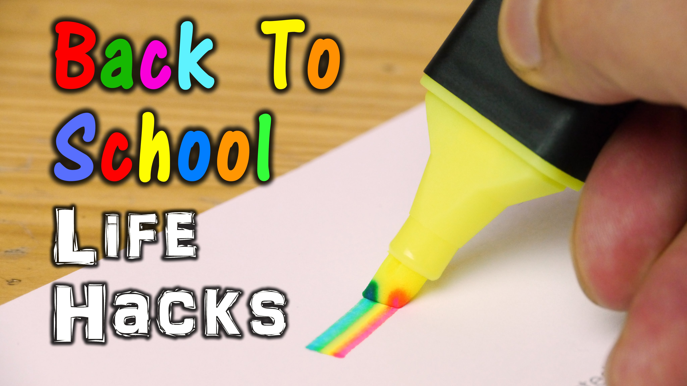

Anything Ten
Anything Ten
Hey guys...Are you looking for a website that will help you in life in differents aspects??? Then you are in the right place.
Check out the life hacks and tips given here and make your life very simple....You can get organized in life in every way with these few tips...
If you are new to cooking, you will find very simple recipes that you can cook in less than 30mins too...
Beauty Hacks

Looking beautiful is any lady’s desire, but there seem to be issues you can’t take care of yourself.
To counter that, Bright Side gathered several secrets that will save you a lot of time and money, while making you look gorgeous.
Food Recipies

Love to eat but don't have the time to cook?
Well, we bring you quick recipes that can be rustled up within 30 minutes without requiring much effort. Sounds too good to be true? Try it to believe it!
There's nothing quite like enjoying simple flavours in home-made meals.
Tech Hacks
No one can resist the power of a game-changing secret, especially when it comes to the gadgets and technologies we use on the daily. If you want to know how to keep earphones from getting tangled or what to do with your favorite square Instagram prints, there's a hack for that, and we've rounded them all up.
Your tech life's about to get a whole lot easier.
School Hacks/Supplies

It’s that time of year again … back to school! While it can be exciting looking forward to a new school year, it can be a bit overwhelming too when it comes to getting organized.
Hopefully by now you have all the supplies that were on your list, but either way, you know that it can be an uphill battle to keep everything sorted over the months ahead.
Here are some cool school hacks.
Medicine-Home Remedy

Your body can throw you for a loop at any time.
You wake up with a sore throat the day you're set to make a major presentation, a seafood-salad sandwich leaves you with grumbling indigestion, or you overdo it at the gym and arrive home with a stiff neck.
Wouldn't it be great to have a live-in doctor/therapist/trainer to tend to your everyday aches and pains?
Here are some useful home remedies.